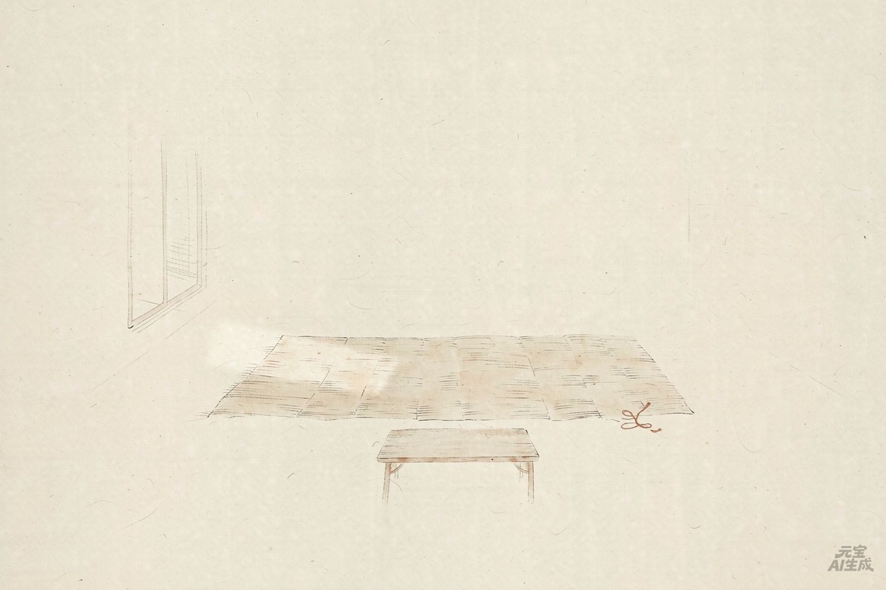
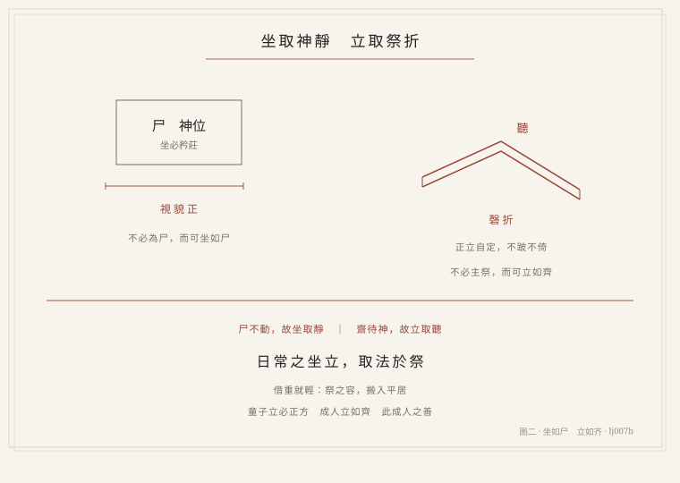

曲礼上 · 一·八 · 第 7 课
上六课说的都是「做什么、不做什么」——取舍的分寸。这一课忽然停下来，讲「什么都不做的时候，身体怎么放」。
说什么事：坐着，要像尸坐在神位上；立着，要像祭前斋戒时那样。
落在哪一层：经与训之间。八箇字，注家争了两千年：郑玄读「若夫」为「若欲为丈夫」；刘敞、朱熹说这两句本不是《曲礼》的话，是《大戴礼记·曾子事父母》篇的句子，抄手把「若夫」二字漏删了。
为何编在此位：一·一讲「毋不敬」是心，一·二至一·七讲敬在事上如何落；到一·八，礼从外面的事缩回自己的身体。前面都是对境，这一节是对己。
【经】若夫坐如尸，立如齊。
若夫 郑注：「若夫，言若欲为丈夫也。」——不是「至于那」，是「若要做箇成人」。丈夫在此指成人，不是男子。《左传》宣十二年先縠语：「成师以出，闻敌强而退，非夫也。」郑引之，正取此义。
坐如尸 郑注：「视貌正。」尸是祭时代表死者受祭的人，坐在神位上不动。坐如尸，取的不是死，是「不动」与「目正」。
立如齐 郑注：「磬且听也，齐谓祭祀时。」齐读斋。磬，是身体折成磬的度数；听，是耳在等。
磬折 孔疏引《考工记》磬氏「倨句一矩有半」，谓人倚立当如磬之折杀，其形必曲。江永补一句最确：「如齐者正立自定，不跛不倚，仪礼所谓疑立。」——不是弯腰，是立定不移，两足齐、身不偏。
齐 郑云「齐谓祭祀时」。孔疏辨：斋多在祭前，且多坐而无立，「今云立如齐者，齐有立者」——此指祭日神前之立，非斋室中坐着的斋。
若要成一箇成人：坐着，像尸坐在神位上，目正视端；立着，像祭时那样，身折如磬，静而听。
日常的坐立，取法于祭。人不必为尸而可坐如尸，不必主祭而可立如齐。
第一层 借重就轻 《曲礼》的方法在这一句上最露：把最重的场合——祭——的姿势，搬进最轻的时刻——平居。搬的理由，郑注只给六个字：「视貌正」「磬且听」，都是身体上的实指，不说道理。道理在后世注家：心肃则貌庄。姿态不是演给场合看的；场合只是把它借出来，好让人看见自己平时是怎样。
第二层 尸静，斋听 尸不动，故坐取静；斋待神，故立取听。一坐一立，恰好是「不动」与「待」两种功夫。永嘉周氏说得深：「必庄必敬然后可以为尸……当是时也，其心寂然而无一物，有孚颙若而无他虑。」——坐如尸，练的是心里空；立如齐，练的是心里等。空与等，都不是天生的，是摆出来的；摆久了，才长在身上。
第三层 「丈夫」与「成人之善」 这是本课最要紧的一处：郑读「若夫」为「为丈夫」，刘、朱读「若夫」为衍文。两条路争的是文本，落到义上却同归。大戴原文自己说这两句「此成人之善者也，未得为人子之道」——「夫」与「成人」，同一件事。所以无论从郑还是从刘朱，这一节都不是给孩子的功课，是给长成的人的功课。
第四层 礼有等 《曲礼》后文写童子：「立必正方，不倾听。」童子之立是「正方」，成人之立是「如齐」；同一根脊梁，两个年级。拿成人之容责童子，是虐；拿童子之容自恕，是惰。大戴说「未得为人子之道」，正是替童子留一步。
与今日何干 今日的姿态多半是给别人看的：镜头前收一收肩，坐下时松一松腰。此句把姿态收回给自己：坐的时候，目有没有正；立的时候，耳有没有在听。两样都无从表演，只有自己知道。
| 左 | 右 |
|---|---|
| 坐如尸：日常之坐，借神位之静 | 立如齐：日常之立，借祭前之折 |
| 郑读「若夫」为丈夫 | 刘、朱读为衍文：两读同归「成人之善」 |
| 尸重目，故曰视貌正 | 斋重耳，故曰磬且听 |
| 童子立必正方 | 成人立如齐：礼有等 |

